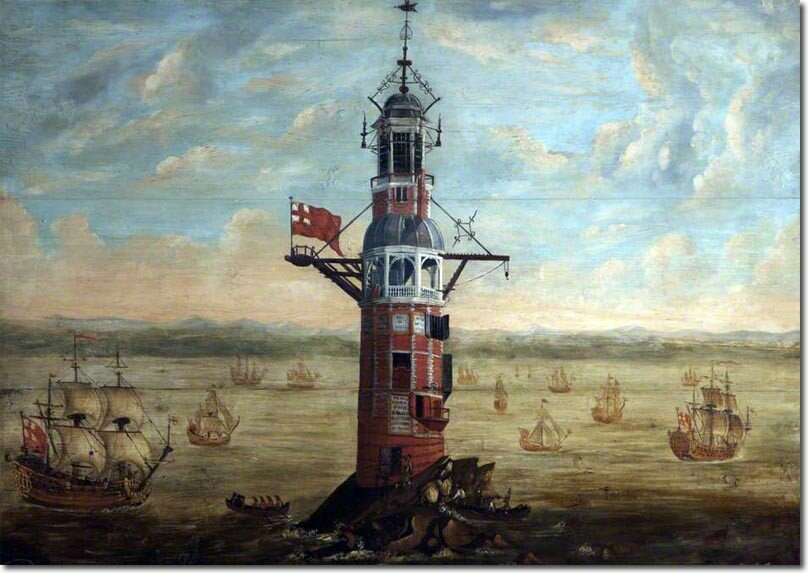
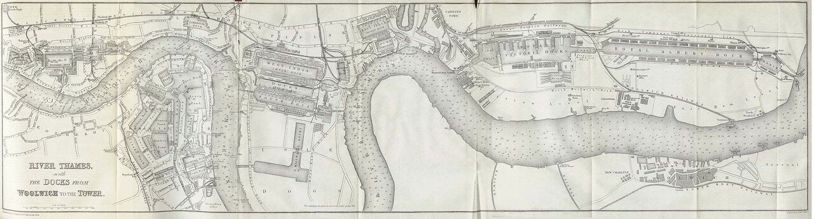

Получив корабли в собственность, руководство Ройял Нейви озаботилось проблемой обеспечения их безопасного плавания. И хотя акватория, в которой это плавание осуществлялось, не выходила еще далеко за пределы прибрежных вод, стало очевидным, что уже недостаточно одних естественных береговых ориентиров, требуется создание искусственных знаков, особенно в районах, где существует большая опасность для судоходства. А также требуется государственная программа по подготовке специалистов по навигации для королевского флота.

Маяк Эдистон. Построен Генри Уинстенли, 1698. Plymouth City Council. Museum and Art Gallery.
Нельзя сказать, что прежде не было организаций, которые заботились бы о подготовке кадров для прибрежного плавания. Во многих крупных портах Англии существовали ассоциации, гильдии, «Морские братства» (Fraternities of the Sea), которые, наряду с другими задачами (религиозные и социальные функции) занимались отбором и контролем деятельности лоцманов и судоводителей в портах своей ответственности.
Существовали также гильдии иностранных моряков. Например, в Саутгемптоне имелась scuola славянских гребцов с венецианских галер, которая имела свои закрепленные места в церкви св. Николая и на коммунальном кладбище.
Большую роль в обеспечении безопасной навигации играли также французские лоцманы, приглашенные Генрихом VIII. Но опыт англо-французской войны 1512-1514 гг. показал, что это несет угрозу суверенитету Англии. В самый ответственный момент наемные лоцманы покидали свои посты или, хуже того, передавали навигационную информацию противнику.
Недовольны были и владельцы грузов, доставляемых в Лондон по Темзе: очень часто имели место происшествия с кораблями по вине некомпетентных лоцманов.

Темза в районе Лондона. Карта 1882 г.
В 1513 году гильдия моряков направила петицию королю с просьбой ввести лицензирование деятельности судоводителей на столичной водной магистрали. В 1514 году Генрих VIII даровал хартию руководству нового братства – to The Master, Wardens and Assistants of the Guild Fraternity or Brotherhood of the Most Glorious and Undivided Trinity and of Saint Clement in the Parish of Deptford Strond in the County of Kent, если полностью приводить титул руководителей новой организации. Кратко ее название – Тринити Хаус, по названию церкви в Детфорде. Эта организация существует и поныне и отвечает за обеспечение навигации в водах Англии, Уэльса и других британских территориальных водах, за исключением Шотландии и острова Мэн и Северной Ирландии.
По решению Генриха VIII новая организация должна была заниматься подготовкой, лицензированием, и сопровождением деятельности специалистов каботажного плавания в Англии. Во главе новой организации был поставлен Мастер Томас Сперт (Thomas Spert), до того проходивший службу в качестве старшего штурмана на самых крупных кораблях английского флота той эпохи Mary Rose и Henri Grace à Dieu. Помимо Мастера, руководство Тринити Хаус включало четырех инспекторов («уорден», warden) и восемь заместителей (assistant), избираемых ежегодно всеми членами гильдии моряков. Членами нового братства могли стать только английские моряки.
К сожалению, о ранней деятельности Тринити Хаус документов почти не сохранилось. Страшный пожар 1714 года уничтожил почти все архивы этой корпорации. Поэтому вся история организации воспроизводится по копиям, сделанным для различных целей и различными субъектами.
Некоторые исследователи утверждают,что Генрих VIII создал Тринити Хаус по образцу и подобию аналогичных учреждений Испании. Помните, когда мы говорили о маневрировании парусных кораблей в составе эскадры, то упомянули об Алонсо де Чавесе, которого испанский король Филипп II назначил на пост Главного штурмана (Piloto Mayor) в Каса-де-Контратасьон в Севилье (La Casa de Contratación, букв. «Торговый дом», а по сути – «Адмиралтейство Индий»). Первым Piloto Mayor (1508) был флорентиец на испанской службе Америго Веспуччи, именем которого была названа новая часть света – Америка. Так вот, некоторые считают, что учреждение поста Piloto Mayor стимулировало решение английского короля о создании аналогичного органа в Англии. Об этом пишет, например, Хаклюйт в своих трудах. Но есть и другая точка зрения: Тринити Хаус – это развитие системы гильдий, издавна существовавших в королевстве. Томас Сперт, первый мастер Тринити Хаус, своими первыми шагами закрепил монополию гильдии на проводку судов, первоначально по Темзе и ее устью, а затем и по другим участкам прибрежных вод Англии. Исключение было сделано для лоцманов из Сэндвича, Дувра, Хариджа, Ипсвича, проводящих свои суда в Лондон. Естественно, эти лоцманы платили Сперту солидную мзду. Первоначально против монополии Тринити Хаус поднялись свободные лоцманы и судоводители, не входившие в гильдию. Категорически против ограничения своих прав выступили и некоторые иностранные сообщества, в первую очередь Ганзейская лига. Но тут на помощь гильдии пришли коррумпированные чиновники Адмиралтейства, которые лоббировали появление королевского документа, поддержавшего монополию Тринити Хаус. За регулярное вознаграждение, естественно.
Хартия 1514 года была в дальнейшем подтверждена Эдуардом VI, Марией I и Елизаветой I практически без изменений. И только во время правления Елизаветы появились новые положения, относящиеся к деятельности Тринити Хаус по обустройству судоходства на Темзе и прилегающих водах английского побережья.
В 1565 году, на восьмом году правления Елизаветы I, был выпущен королевский указ о регулировании каботажного плавания в Англии – ‘An Act concerning Sea-marks and Mariners’, дававший руководству Тринити Хаус полномочия
“at their wills and pleasures, and at their costs, [to] make, erect, and set up such, and so many beacons, marks, and signs for the sea… whereby the dangers may be avoided and escaped, and ships the better come into their ports without peril.”
по их желанию и за их счет, изготавливать, воздвигать и устанавливать такое количество маяков и морских знаков, которое позволит избежать опасностей и обеспечит благополучное прибытие кораблей в свои порты.
В январе 1581 года на Тринити Хаус был возложен контроль за рыболовными судами на Темзе и прибрежных акваториях от Ньюкасла до Портсмута. По инициативе гильдии среда была объявлена рыбным днем, чтобы поощрить дальнейшее развитие рыболовного флота.
Однако вся деятельность Тринити Хаус в XVI веке носила исключительно консультативный характер. Отсутствуют данные о каких либо административных или организационных функциях, выполняемых организацией. Положение изменилось лишь при Карле II, когда на Мастера и инспекторов Тринити Хаус была возложена обязанность проверять квалификацию морских офицеров. Но мы сейчас не рассматриваем этот период морской истории Англии.
Продолжение последует.